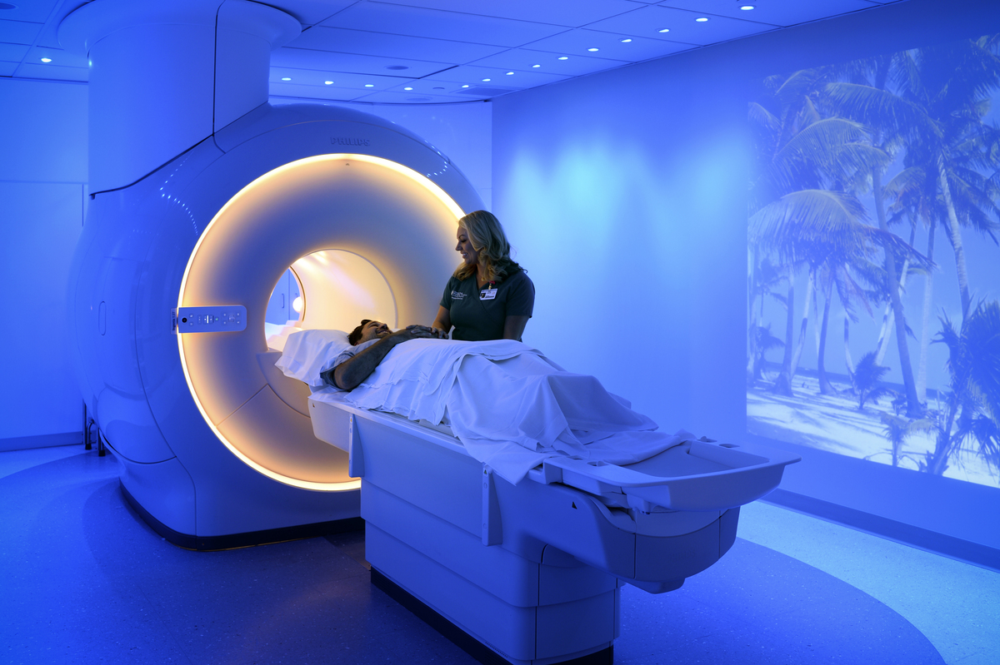

| ⟨⟨ |  | ⟩⟩ |
Saint Francis Health System is an integrated health system with an emphasis on a complete continuum of care. From services for the tiniest premature newborns, to end-of-life care options and all medical needs in between, the physicians and staff of Saint Francis treat each patient with dignity and integrity.
The Children's Hospital, The Heart Hospital, Laureate, Saint Francis Hospital, Saint Francis Hospital Muskogee, Saint Francis Hospital South, Saint Francis Hospital Vinita, Warren Clinic, and many other departments and services. Saint Francis is one of the leading multispeciality hospitals in India, providing excellent health care to all. Our advanced healthcare technology combined with years of expertise of the best physicians ensures good health for the surrounding community. We take every step to provide a cure for our patients and bring smiles to their faces. The highly dedicated and qualified doctors with ultra-modern amenities together cater to the needs of all health issues which in turn leads to successful recovery of the patients. Our treatment protocols blend the most ethical and the most advanced Indian & Japanese medical practices. Our excellent clinical practices deliver fast recovery to the patients and help them to get back to their normal lives much sooner. We are leveraging technology to facilitate seamless health care delivery. Also, we are holding the pride of having the best heart specialists in India, offering holistic services for the cardiac patients. Dr. Adil Sadiq, our Senior Consultant & Head - Adult Cardiac Surgery, is a pioneer in Minimally Invasive Cardiac Surgery (MICS). He has performed over 4500 cardiac surgeries successfully which have helped our cardiac patients to continue beating for their loved ones. Our neurosurgeons are specialised in performing the full spectrum of neurosurgeries in patients of all ages. Dr. Satish Rudrappa, Senior Consultant - Neurosurgery and Head - Dept. of Spine Surgery, is one of the most eminent and distinguished senior neurosurgeons in India. With his guidance, our team of neurosurgeons understand the complex nature of the nervous system and apply the knowledge to enhance the quality of human life. The Sakra Institute for Orthopaedics is a frontrunner in offering the latest orthopaedic treatments and surgical techniques. Our team of doctors headed by Dr. Chandrashekar P, Senior Consultant & HoD-Orthopaedics, has made a remarkable achievement by successfully performing a rare meniscus transplant surgery for the first time in the state of Karnataka. We have a team of renowned organ transplant surgeons who are highly qualified and have extensive experience and expertise in handling transplant surgeries including liver transplants and kidney transplants. Dr. Dineshvsvs , Director - Gastroenterology & Hepatology is highly skilled and extensively trained in performing transplant surgery that ensures superior results. By combining state-of-the-art infrastructure with cutting-edge technology, we eliminate the critical problems in healthcare with utmost efficiency and accuracy.